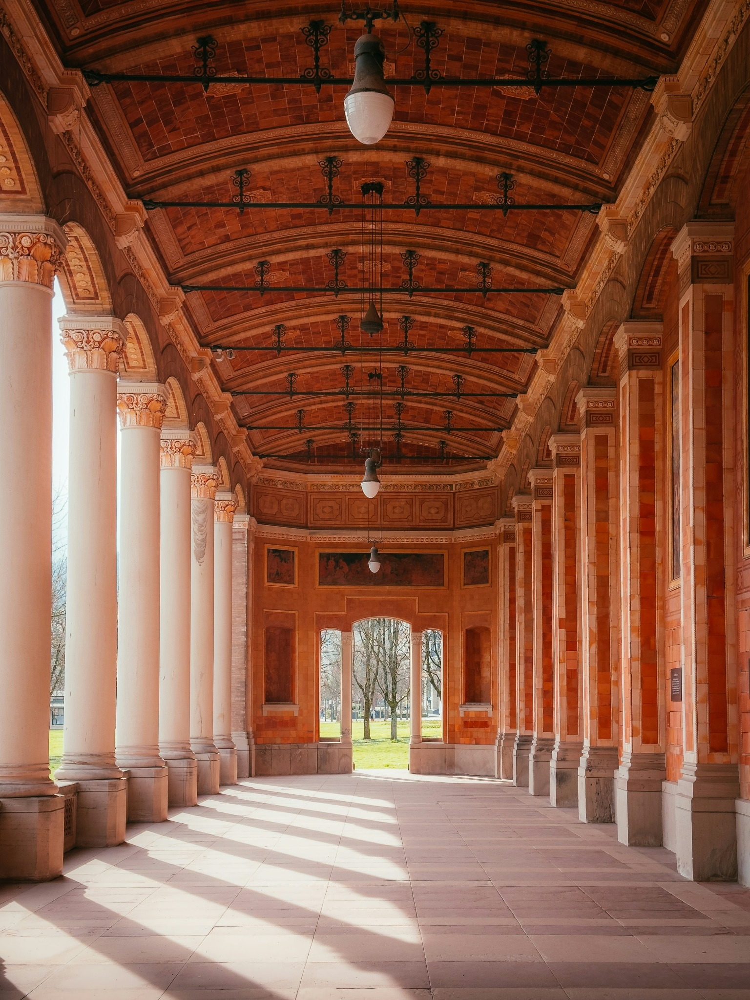
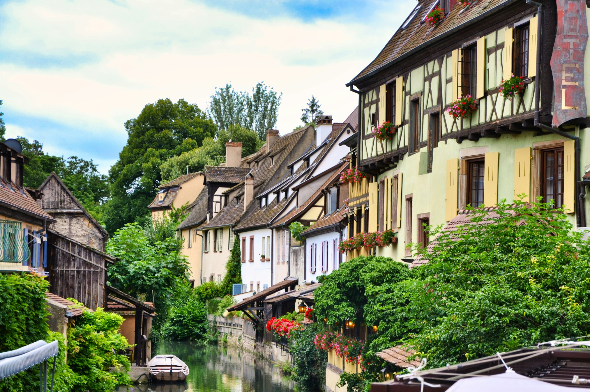
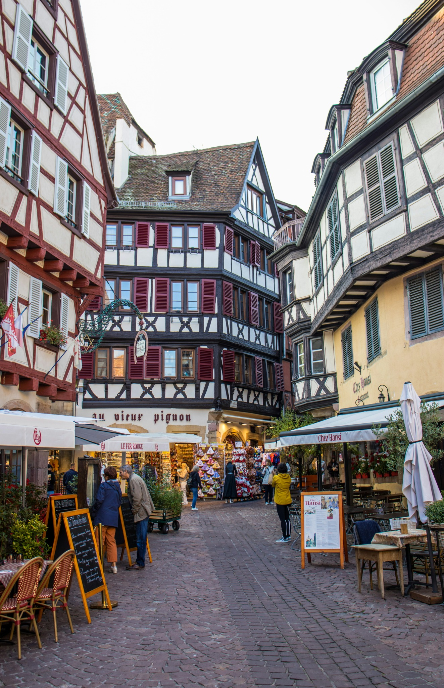
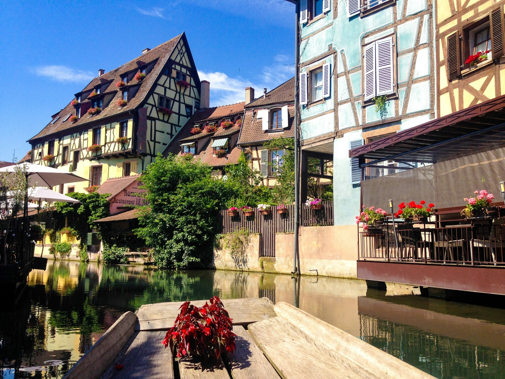
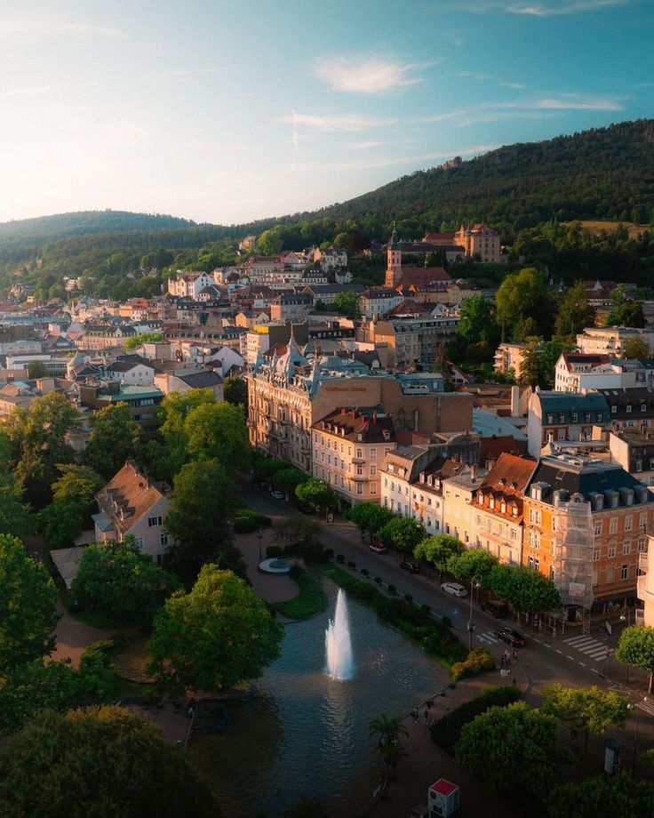
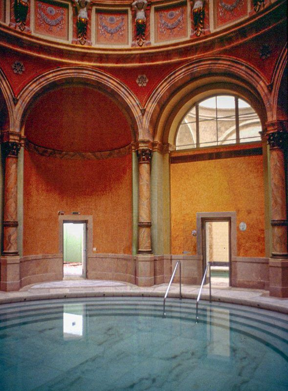
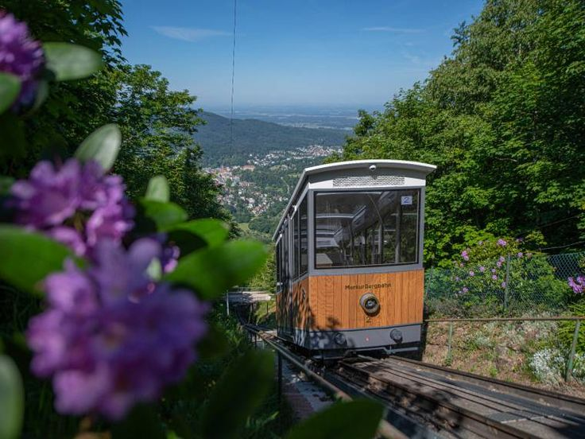
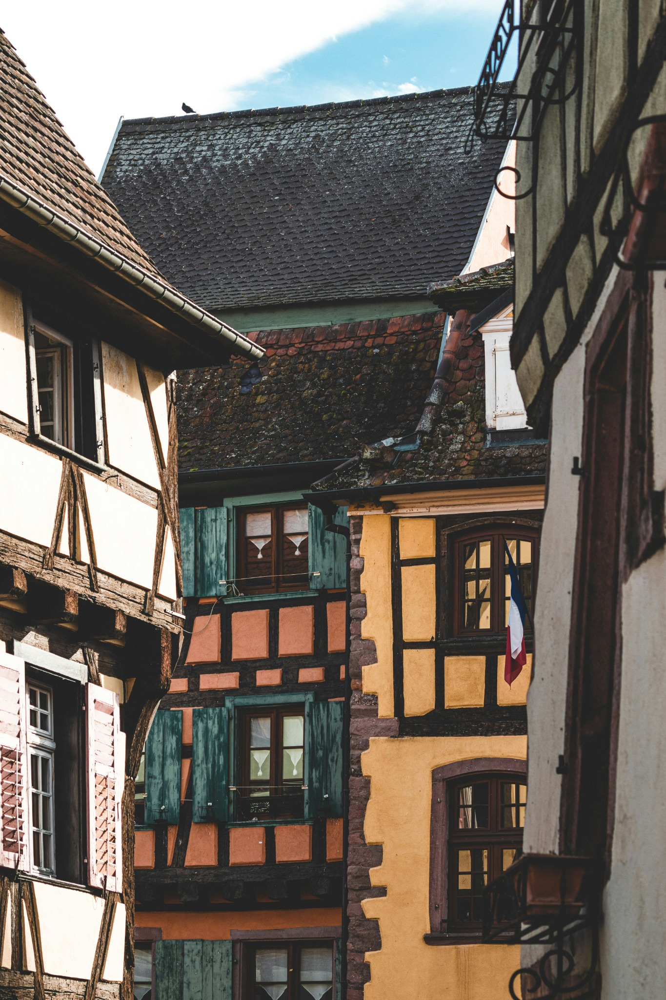

Trinkhalle
Un porticato da attraversare con calma, tra colonne e dettagli dipinti: una delle soste che raccontano l’eleganza di Baden-Baden.
Cinque giorni tra case a graticcio, acqua termale e panorami nel verde. Due città da collegare in treno, con il tempo di cambiare ritmo.
A Colmar si seguono i canali tra facciate colorate e vicoli d’Alsazia. A Baden-Baden il paesaggio cambia: porticati eleganti, terme e colline boscose. Strasburgo lega le due metà del viaggio, come punto di arrivo, snodo ferroviario e aeroporto di ritorno.

Il primo incontro passa dalla Petite Venise: case a graticcio, ponti e facciate che si specchiano nel canale. È uno di quei luoghi in cui basta fermarsi qualche minuto per entrare nell’atmosfera del viaggio.
La passeggiata continua nel quartiere dei pescatori, con scorci da ritrovare anche più tardi, quando la luce cambia.

Oltre ai canali, Colmar è un intreccio di strade, cortili e architetture da osservare senza fretta. Il centro storico tiene insieme la parte più fotografata e dettagli che si incontrano semplicemente camminando.
Una deviazione particolare è il Musée Bartholdi, nella casa d’infanzia del creatore della Statua della Libertà. Un legame inatteso tra una piccola città d’Alsazia e uno dei simboli più conosciuti al mondo.
Dopo Colmar si ripassa da Strasburgo per proseguire in treno verso Baden-Baden. Le due città diventano le basi del viaggio: due notti in Alsazia, poi due nella città termale tedesca.
Il percorso nasce senza auto, con arrivo e ritorno dall’aeroporto di Strasburgo. Collegamenti e coincidenze si scelgono sulle date effettive, lasciando spazio anche al trasferimento dalla stazione al centro di Baden-Baden.


La seconda metà del viaggio ha un passo diverso. Baden-Baden si scopre tra il Kurhaus, il quartiere termale e le passeggiate della Lichtentaler Allee, con la Foresta Nera a fare da sfondo.
Qui anche una giornata in città può alternare architettura, parchi e qualche ora dedicata soltanto al relax.

Le Friedrichsbad uniscono il bagno termale a un percorso storico romano-irlandese, in ambienti che meritano di essere guardati quanto vissuti.
Le Caracalla sono l’alternativa per chi preferisce piscine termali moderne. La scelta si adatta al tipo di esperienza che cerchi e alla giornata: alle Friedrichsbad le regole sul costume cambiano secondo il giorno della settimana.

La funicolare porta sul Merkur, dove Baden-Baden lascia spazio a un panorama di colline, boschi e orizzonti più ampi.
È la pausa nel verde che completa il viaggio: una salita, una passeggiata e il tempo di guardare la città dall’alto, prima di tornare al suo ritmo tranquillo.
I canali di Colmar e l’acqua termale di Baden-Baden sono il filo che accompagna il percorso. Pochi cambi di base e due atmosfere diverse, con spazio per una visita particolare, una passeggiata o una deviazione nel verde.
Il percorso può cambiare con la stagione e con il tempo che vuoi dedicargli.

Un porticato da attraversare con calma, tra colonne e dettagli dipinti: una delle soste che raccontano l’eleganza di Baden-Baden.
Una piccola barca cambia il punto di vista: il canale diventa il percorso e le case si osservano dal basso, tra ponti e riflessi.

Con sei giorni si può aggiungere una giornata tra i borghi alsaziani, mantenendo Colmar come base e scegliendo le località secondo i collegamenti disponibili.
Possiamo adattare Colmar + Baden-Baden ai tuoi voli, ai giorni che hai e alla stagione in cui parti, scegliendo le esperienze e organizzando tutti i dettagli degli spostamenti.
Costruiamo il tuo viaggio ✦